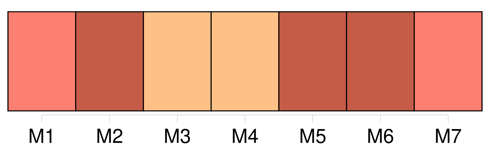

Longueur nb maillons : 13 mentions |
  |
« Non, docteur, je ne comprendrai jamais qu' [une femme] trompe [son] mari. J'admets même qu' [elle] ne l'aime pas, qu' [elle] ne tienne aucun compte de [ses] promesses, de [ses] serments!! [6 phrases] Je suis même certain qu' [une femme] n'est mûre pour l'amour vrai qu'après avoir passé par toutes les promiscuités et tous les dégoûts du mariage, qui n'est, suivant un homme illustre, qu'un échange de mauvaises humeurs pendant le jour et de mauvaises odeurs pendant la nuit. [1 phrases] [Une femme] ne peut aimer passionnément qu'après avoir été mariée.
Si je [la] pouvais comparer à une maison, je dirais qu' [elle] n'est habitable que lorsqu'un mari, a essuyé les plâtres. « Quant à la dissimulation, [toutes les femmes] en ont à revendre en ces occasions -là. [2 phrases] [3 phrases] Mais [vous] !! |
La ressource peut être téléchargée sur la page Ortolang
Si vous avez des questions ou vous voyez des erreurs, merci d'envoyer un mail à silvia.federzoni89@gmail.com
Site développé par S. Federzoni (contact)